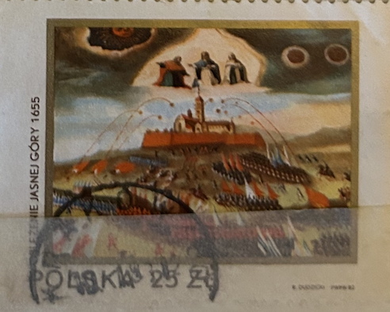
| SOURCE | TITLE| IMAGE MATCH | click to source page |
| www.amazon.com | Amazon.com: Heart & Soul : Sal Solo: Digital Music | |
| www.allmusic.com | Heart & Soul - Sal Solo | Album | AllMusic | 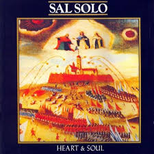 |
| www.youtube.com | SAL SOLO – Contact – 1985 – [from album 'Heart & Soul ... | 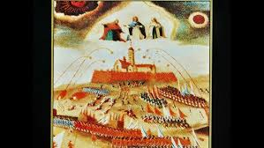 |
| www.art.com | The Swedish Siege of the Monastery of Jasna Gora in 1655 ... | 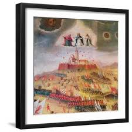 |
| www.youtube.com | Music + You - YouTube | 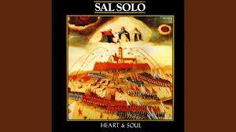 |
| www.amazon.com | The Cultural Heritage of Jasna Gora: ROZANOW, ZOFIA ... | 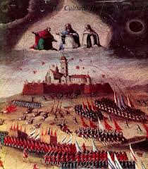 |
| www.mediastorehouse.com | The Swedish Siege of Jasna Gora Monastery Print (1655). Art ... | 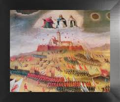 |
| www.ebay.com | Zoia Razanow, Ewa Smulikowska THE CULTURAL HERITAGE OF JASNA ... | 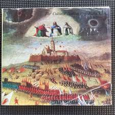 |
| en.wikipedia.org | File:Oblężenie Jasnej Góry przez Szwedów w 1655.jpg - Wikipedia | 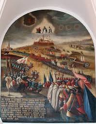 |
| fineartamerica.com | Polish Armed Forces Tapestries for Sale - Fine Art America | 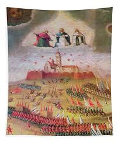 |
| www.shazam.com | How Was I To Know? - Sal Solo: Song Lyrics, Music Videos ... | |
| www.discogs.com | Sal Solo – Heart & Soul | Releases | Discogs | 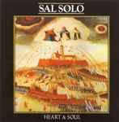 |
| pxcanvasprints.com | The Swedish Siege Of The Monastery Of Jasna Gora In 1655 ... | 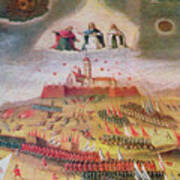 |
| www.youtube.com | Sal solo: Contact (1985) - YouTube | 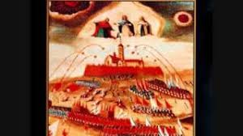 |
| allegro.pl | Zofia Rozanow Ewa Smulikowska - SKARBY KULTURY NA JASNEJ ... | 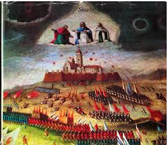 |
| open.spotify.com | Poland (your spirit won't die) - song and lyrics by Sal Solo ... | 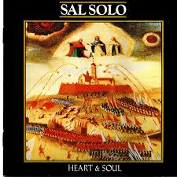 |
| allegrolokalnie.pl | Kultura skarby - Allegro Lokalnie | 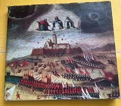 |
| www.deezer.com | Sal Solo: albums, songs, concerts | Deezer | 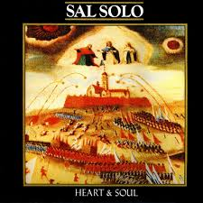 |
| catholicweekly.com.au | Guest Contributor, Author at The Catholic Weekly | 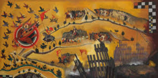 |
| www.mercadolivre.com.br | Sal Solo 1985 Heart & Soul Lp Heartbeat / Poland / Go Now ... | 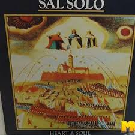 |
| en.wikipedia.org | Sacred mysteries - Wikipedia | 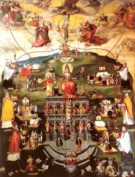 |
| allegro.pl | ze Skarbca Kultury - Antykwariat - Allegro.pl | 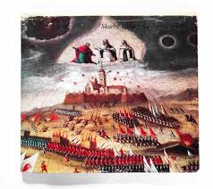 |
| en.todocoleccion.net | heart & soul - ron carter - cedar walton duo - Buy LP vinyl ... | 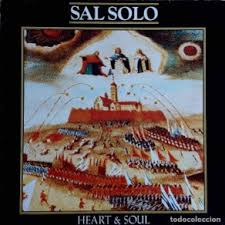 |
| www.kupindo.com | Cultural Heritage of Jasna Gora-Varšava 1974. - Kupindo.com ... | 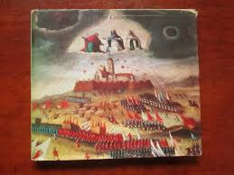 |
| www.abebooks.co.uk | The Cultural Heritage of Jasna Góra by Zofia - AbeBooks | 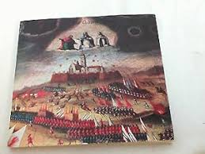 |
| meicpearse.substack.com | Tribal Gods and Religious-National Myths: - by Meic Pearse | 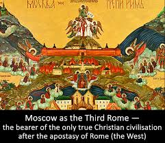 |
| tezeusz.pl | Muzyka w miniaturze polskiej - Zofia Rozanow książka ... | 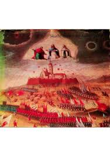 |
| antykwariat-torun.pl | Jasna Góra : album Toruński Antykwariat Księgarski | 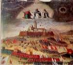 |
| www.shazam.com | Poland (your Spirit Won't Die) - Sal Solo: Song Lyrics ... | |
| www.artsy.net | Tomasz Kulka - Art & Prints for Sale | Artsy | 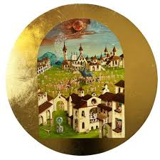 |
| www.empik.com | Skarby kultury na Jasnej Górze - Opracowanie zbiorowe ... | 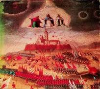 |
| commons.wikimedia.org | File:Matteo Perez d' Aleccio (1547-1616) - The Siege of ... | 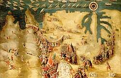 |
| www.facebook.com | The triumph of death painting by Pieter Bruegel | 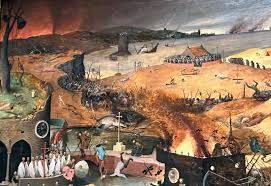 |
| forsal.pl | Pożytki z niepodległości, czyli do czego właściwie potrzebne ... | 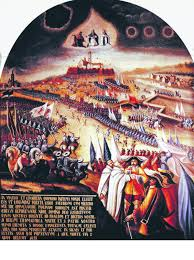 |
| www.reddit.com | Remedios Varo - Spiral Transit : r/museum | 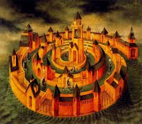 |
| www.historyextra.com | A Brief History Of The Afterlife: From The Ancients To ... | 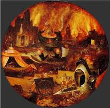 |
| www.comptonverney.org.uk | The Descent Into Limbo | Compton Verney | 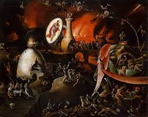 |
| infobusko.pl | Kalendarium: 18 listopada 1655 r. rozpoczęło się oblężenie ... | 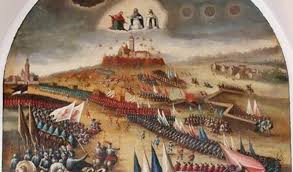 |
| www.instagram.com | In 1463, 4,000 houses in Hieronymus Bosch's hometown were ... | 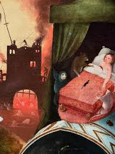 |
| allegro.pl | Skarby Kultury na Jasnej Górze - Niska cena na Allegro | 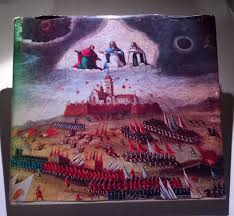 |
| www.mediastorehouse.com | Abraham's The Second Coming, 1794 Egg Tempera Print. Art ... | 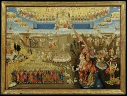 |
| music.apple.com | Sal Solo - Apple Music | 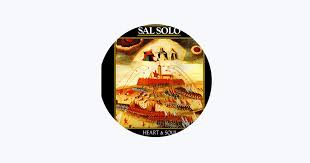 |
| www.artmajeur.com | The Fall Of Jericho, Painting by Francis Lagneau | ArtMajeur | 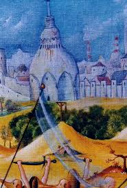 |
| www.codart.nl | Truly Wicked: The Seven Deadly Sins Visualized - CODART | 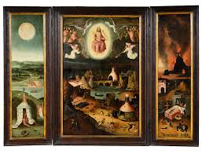 |
| fineartamerica.com | The harrowing of hell Acrylic Print by Follower of ... | 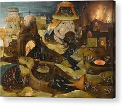 |
| www.photowall.com | Vision of Tondal – stunning canvas print – Photowall | 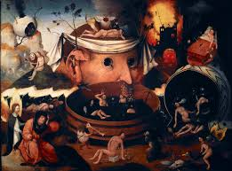 |
| www.gosc.pl | Nie tylko potop - www.gosc.pl | 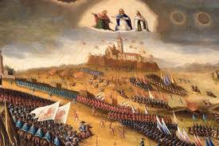 |
| open.spotify.com | Poland (your spirit won't die) - song and lyrics by Sal Solo ... | 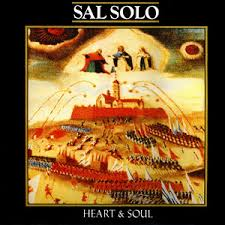 |
| www.europosters.eu | Poster The Last Judgement,, Bosch, Hieronymus (c.1450-1516 ... | 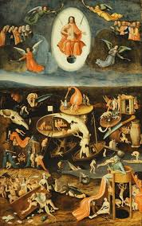 |
| www.bbc.com | The eerie historical visions that predict the apocalypse | 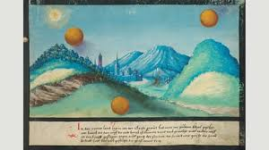 |
| www.reddit.com | I would like some recommendation of medieval art of the sky ... | 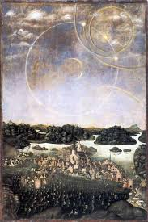 |
| www.instagram.com | Pieter Bruegel the Elder's “The Triumph of Death” (c. 1562 ... | 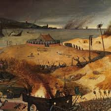 |
| www.facebook.com | Hieronymus Bosch, The Garden of Earthly Delights (detail ... | |
| www.tripadvisor.com | Medieval Museum - Display - Picture of Medeltidsmuseet ... | |
| www.deezer.com | Sal Solo: albums, songs, concerts | Deezer | |
| www.1st-art-gallery.com | Tabletop of the Seven Deadly Sins and the Four Last Things ... | |
| www.vads.ac.uk | The Garden of Earthly Delights - NICE Paintings - National ... | |
| augusta-stylianou.pixels.com | The Temptation of Saint Anthony #3 Jigsaw Puzzle by ... | |
| www.insidehook.com | Unearthed 16th Century 'Book of Miracles' Depicts Eerie ... |
{kind=link}
_-_The_Siege_of_Malta,_Flight_of_the_Turks,_13_September_1565_-_BHC0258_-_Royal_Museums_Greenwich.jpg){kind=link}